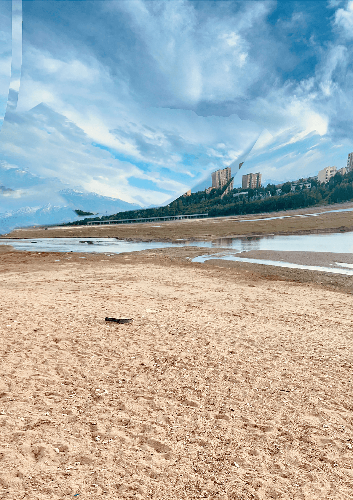

Алек Борисов. Сайранский глитч. Алматы, 2026
Сайранский глитч - перформативная фотография, сделанная во время прогулки по дну городского озера Сайран весной 2026 года, пока оно еще было почти свободно от воды.
Перформативная фотография - авторская техника фотосъемки, когда камера снимает в процессе собственного движения, которое задает и направляет фотограф, держащий ее в руке. Спонтанная, разнообразная и плавная траектория такого движения напоминает китайскую гимнастику, поэтому эта техника так же называется "глитч-кунг-фу".
- - -
Перформативная фотография - авторская техника фотосъемки, когда камера снимает в процессе собственного движения, которое задает и направляет фотограф, держащий ее в руке. Спонтанная, разнообразная и плавная траектория такого движения напоминает китайскую гимнастику, поэтому эта техника так же называется "глитч-кунг-фу".
- - -